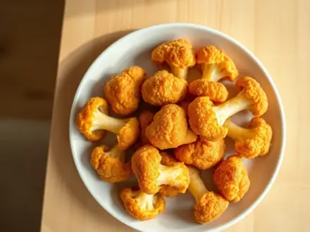

Что приготовить из капусты
Белокочанная, цветная и брокколи: щи, тушёная капуста, салаты. 54 рецептов: у каждого время, калории и БЖУ на порцию, пошаговые инструкции и список покупок
 Салат из квашеной капусты с луком и маслом10 мин · 167 ккал · Б 3 г · Салат
Салат из квашеной капусты с луком и маслом10 мин · 167 ккал · Б 3 г · Салат Капуста, жаренная по-китайски с чесноком и соевым соусом15 мин · 246 ккал · Б 7 г · Второе блюдо
Капуста, жаренная по-китайски с чесноком и соевым соусом15 мин · 246 ккал · Б 7 г · Второе блюдо Брокколи с чесноком на сковороде15 мин · 132 ккал · Б 4 г · Гарнир
Брокколи с чесноком на сковороде15 мин · 132 ккал · Б 4 г · Гарнир Брокколи с беконом и чесноком на сковороде18 мин · 455 ккал · Б 23 г · Второе блюдо
Брокколи с беконом и чесноком на сковороде18 мин · 455 ккал · Б 23 г · Второе блюдо Овощи на пару20 мин · 127 ккал · Б 5 г · Гарнир
Овощи на пару20 мин · 127 ккал · Б 5 г · Гарнир Паста с брокколи и чесноком20 мин · 609 ккал · Б 22 г · Второе блюдо
Паста с брокколи и чесноком20 мин · 609 ккал · Б 22 г · Второе блюдо Цветная капуста, жаренная с яйцом20 мин · 341 ккал · Б 18 г · Второе блюдо
Цветная капуста, жаренная с яйцом20 мин · 341 ккал · Б 18 г · Второе блюдо Жареные макароны с овощами по-китайски20 мин · 525 ккал · Б 21 г · Второе блюдо
Жареные макароны с овощами по-китайски20 мин · 525 ккал · Б 21 г · Второе блюдо Креветки с овощами в соевом соусе20 мин · 397 ккал · Б 44 г · Второе блюдо
Креветки с овощами в соевом соусе20 мин · 397 ккал · Б 44 г · Второе блюдо Брокколи с шампиньонами в соевом соусе20 мин · 297 ккал · Б 14 г · Второе блюдо
Брокколи с шампиньонами в соевом соусе20 мин · 297 ккал · Б 14 г · Второе блюдо Салат «Витаминный» из капусты с морковью и яблоком20 мин · 141 ккал · Б 3 г · Салат
Салат «Витаминный» из капусты с морковью и яблоком20 мин · 141 ккал · Б 3 г · Салат Пюре из кабачка и цветной капусты25 мин · 46 ккал · Б 2 г · Гарнир
Пюре из кабачка и цветной капусты25 мин · 46 ккал · Б 2 г · Гарнир Тайское карри с тофу и овощами25 мин · 463 ккал · Б 14 г · Второе блюдо
Тайское карри с тофу и овощами25 мин · 463 ккал · Б 14 г · Второе блюдо Крем-суп из брокколи с сыром25 мин · 324 ккал · Б 14 г · Суп
Крем-суп из брокколи с сыром25 мин · 324 ккал · Б 14 г · Суп Паста примавера с овощами25 мин · 569 ккал · Б 19 г · Второе блюдо
Паста примавера с овощами25 мин · 569 ккал · Б 19 г · Второе блюдо Киноа с курицей и брокколи25 мин · 644 ккал · Б 50 г · Второе блюдо
Киноа с курицей и брокколи25 мин · 644 ккал · Б 50 г · Второе блюдо Жареная капуста с яйцом25 мин · 402 ккал · Б 17 г · Второе блюдо
Жареная капуста с яйцом25 мин · 402 ккал · Б 17 г · Второе блюдо Котлеты из брокколи с сыром25 мин · 509 ккал · Б 26 г · Второе блюдо
Котлеты из брокколи с сыром25 мин · 509 ккал · Б 26 г · Второе блюдо Цветная капуста по-польски с яйцом и сухарями25 мин · 448 ккал · Б 18 г · Второе блюдо
Цветная капуста по-польски с яйцом и сухарями25 мин · 448 ккал · Б 18 г · Второе блюдо Крем-суп из цветной капусты со сливками25 мин · 220 ккал · Б 7 г · Суп
Крем-суп из цветной капусты со сливками25 мин · 220 ккал · Б 7 г · Суп Салат с брокколи, беконом и изюмом25 мин · 369 ккал · Б 11 г · Салат
Салат с брокколи, беконом и изюмом25 мин · 369 ккал · Б 11 г · Салат Тофу с овощами и соевым соусом30 мин · 330 ккал · Б 16 г · Второе блюдо
Тофу с овощами и соевым соусом30 мин · 330 ккал · Б 16 г · Второе блюдо Курица, запечённая с брокколи и сыром30 мин · 481 ккал · Б 53 г · Второе блюдо
Курица, запечённая с брокколи и сыром30 мин · 481 ккал · Б 53 г · Второе блюдо Запеканка с тунцом и брокколи30 мин · 314 ккал · Б 29 г · Второе блюдо
Запеканка с тунцом и брокколи30 мин · 314 ккал · Б 29 г · Второе блюдо Рисовая лапша со свининой и овощами30 мин · 605 ккал · Б 20 г · Второе блюдо
Рисовая лапша со свининой и овощами30 мин · 605 ккал · Б 20 г · Второе блюдо Овощное карри с кокосовым молоком и рисом30 мин · 548 ккал · Б 11 г · Второе блюдо
Овощное карри с кокосовым молоком и рисом30 мин · 548 ккал · Б 11 г · Второе блюдо Запеканка из брокколи с яйцом и сыром30 мин · 466 ккал · Б 33 г · Второе блюдо
Запеканка из брокколи с яйцом и сыром30 мин · 466 ккал · Б 33 г · Второе блюдо Окономияки (японская капустная лепёшка)30 мин · 497 ккал · Б 16 г · Второе блюдо
Окономияки (японская капустная лепёшка)30 мин · 497 ккал · Б 16 г · Второе блюдо Дак-кальби: острая курица с капустой по-корейски30 мин · 453 ккал · Б 34 г · Второе блюдо
Дак-кальби: острая курица с капустой по-корейски30 мин · 453 ккал · Б 34 г · Второе блюдо Капуста тушёная со свининой30 мин · 393 ккал · Б 20 г · Второе блюдо
Капуста тушёная со свининой30 мин · 393 ккал · Б 20 г · Второе блюдо Капуста с фаршем на сковороде30 мин · 399 ккал · Б 21 г · Второе блюдо
Капуста с фаршем на сковороде30 мин · 399 ккал · Б 21 г · Второе блюдо Квашеная капуста с сосисками по-немецки30 мин · 404 ккал · Б 14 г · Второе блюдо
Квашеная капуста с сосисками по-немецки30 мин · 404 ккал · Б 14 г · Второе блюдо Алу гоби - картошка с цветной капустой по-индийски30 мин · 305 ккал · Б 8 г · Второе блюдо
Алу гоби - картошка с цветной капустой по-индийски30 мин · 305 ккал · Б 8 г · Второе блюдо Картошка, тушённая с капустой30 мин · 284 ккал · Б 7 г · Второе блюдо
Картошка, тушённая с капустой30 мин · 284 ккал · Б 7 г · Второе блюдо Капустная солянка с грибами на сковороде30 мин · 263 ккал · Б 9 г · Второе блюдо
Капустная солянка с грибами на сковороде30 мин · 263 ккал · Б 9 г · Второе блюдо Цветная капуста под сырным соусом в духовке30 мин · 390 ккал · Б 21 г · Второе блюдо
Цветная капуста под сырным соусом в духовке30 мин · 390 ккал · Б 21 г · Второе блюдо Цветная капуста в духовке35 мин · 209 ккал · Б 7 г · Гарнир
Цветная капуста в духовке35 мин · 209 ккал · Б 7 г · Гарнир Говядина с брокколи35 мин · 466 ккал · Б 34 г · Второе блюдо
Говядина с брокколи35 мин · 466 ккал · Б 34 г · Второе блюдо Индейка на пару с овощами35 мин · 292 ккал · Б 50 г · Второе блюдо
Индейка на пару с овощами35 мин · 292 ккал · Б 50 г · Второе блюдо
Цветная капуста в кляре на сковороде35 мин · 251 ккал · Б 9 г · Гарнир Шаурма домашняя в лаваше40 мин · 612 ккал · Б 41 г · Второе блюдо
Шаурма домашняя в лаваше40 мин · 612 ккал · Б 41 г · Второе блюдо Овощной суп-пюре40 мин · 94 ккал · Б 3 г · Суп
Овощной суп-пюре40 мин · 94 ккал · Б 3 г · Суп Коулслоу - американский салат из капусты в сливочной заправке40 мин · 169 ккал · Б 4 г · Салат
Коулслоу - американский салат из капусты в сливочной заправке40 мин · 169 ккал · Б 4 г · Салат Щи из свежей капусты45 мин · 119 ккал · Б 4 г · Суп
Щи из свежей капусты45 мин · 119 ккал · Б 4 г · Суп Тушёная капуста50 мин · 191 ккал · Б 6 г · Гарнир
Тушёная капуста50 мин · 191 ккал · Б 6 г · Гарнир Постные котлеты из капусты60 мин · 260 ккал · Б 7 г · Второе блюдо
Постные котлеты из капусты60 мин · 260 ккал · Б 7 г · Второе блюдо Щи постные с грибами60 мин · 164 ккал · Б 5 г · Суп
Щи постные с грибами60 мин · 164 ккал · Б 5 г · Суп Ленивые голубцы70 мин · 552 ккал · Б 24 г · Второе блюдо
Ленивые голубцы70 мин · 552 ккал · Б 24 г · Второе блюдо Борщ постный с фасолью70 мин · 197 ккал · Б 8 г · Суп
Борщ постный с фасолью70 мин · 197 ккал · Б 8 г · Суп Винегрет75 мин · 178 ккал · Б 4 г · Салат
Винегрет75 мин · 178 ккал · Б 4 г · Салат Заливной пирог с капустой на кефире75 мин · 213 ккал · Б 10 г · Выпечка
Заливной пирог с капустой на кефире75 мин · 213 ккал · Б 10 г · Выпечка Долма в капустных листьях110 мин · 417 ккал · Б 24 г · Второе блюдо
Долма в капустных листьях110 мин · 417 ккал · Б 24 г · Второе блюдо Борщ150 мин · 349 ккал · Б 23 г · Суп
Борщ150 мин · 349 ккал · Б 23 г · Суп Щи из квашеной капусты с говядиной150 мин · 265 ккал · Б 19 г · Суп
Щи из квашеной капусты с говядиной150 мин · 265 ккал · Б 19 г · Суп
Другие подборки
- Что приготовить из курицы
- Что приготовить из фарша
- Что приготовить из мяса
- Что приготовить из рыбы
- Что приготовить из картошки
- Что приготовить из яиц
- Что приготовить из творога
- Что приготовить из кабачков
- Что приготовить из грибов
- Что приготовить из риса
- Что приготовить из макарон
- Что приготовить из гречки
- Быстрый ужин за 30 минут
- Быстрый завтрак за 20 минут
- Что приготовить на скорую руку
- ПП-рецепты: лёгкие блюда до 400 ккал
- Белковые блюда: от 25 г белка на порцию
- Дешёвые рецепты из простых продуктов
- Что приготовить ребёнку
- Постные блюда
- Блюда на пару
- Что приготовить в духовке
- Простые супы
- Простые салаты
- Выпечка и десерты
- Блюда на праздничный стол
- Что приготовить из остатков